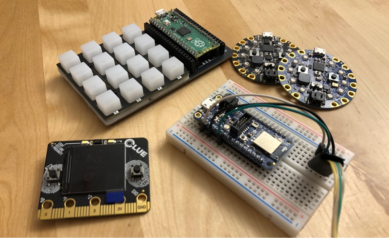

April 25, 2021
I am exploring the idea of "programmable spaces" — where the concept of a computer is expanded outside a little rectangular screen to fill the entire room. Interacting with the programmable space means using physical objects, not virtual ones on a screen. Bringing computing to the scale of a room makes it a communal and social experience.
I want to inspire and empower more people to make and personalize electronic objects in their homes. I made a new way to reprogram electronic boards that is good for multiple people casually making changes, as opposed to the individualistic making experience today. Boards are reprogrammed by swapping out physical trading card-sized programs. When edits are needed, an integrated text editor is there. Objects are also built from the ground up to be connected to the rest of the room without any setup.
Programming a Raspberry Pi Pico by swapping cards, editing code, and printing updated code.
I have used program cards and electronic boards in many of my previous programmable space prototypes, but this is the first time I can integrate microcontrollers into the rest of the programmable space without needing a WiFi connection or having to write a proxy application for each board and functionality I want to support.
Firstly, code is saved and edited on the original maker's personal computer. If someone else wants to see or edit code they have to deal with sharing and permission issues of getting someone else's code on their personal computer. Secondly, electronic devices themselves hide away their source code and capabilities. You may be able to get the current version of code off a device, but not earlier versions or other demos. Trying to understand what the device does and can do requires you to have almost all the same knowledge as the original maker. If someone else's goal is to just understand, play, or temporarily change a device's behavior this is a big hurdle. People are less likely to collaborate if the barrier to entry is too high or if they fear they will mess up the original maker's work.
When doing "serious work" it makes sense that programming revolves around a single person's computer but I think shared spaces would benefit from trading a little bit of the original maker's efficiency for a more inviting experience to potential collaborators.
Let's imagine Alice and Bob are living together and they have some plants. Bob keeps forgetting to water the plants so they come up with an idea for a soil moisture sensor that glows red when the soil is dry. They could just buy a "smart IoT plant sensor" but then they have to deal with the hassle of another account and phone app when what they want sounds pretty simple.
Alice is the more enthusiastic maker and so she buys a couple soil moisture sensors and a few Circuit Playground Bluefruit boards that support Bluetooth and can be programmed with CircuitPython. She writes some CircuitPython code on her computer and saves different versions to her computer's Desktop. After the first sensor works, Alice plugs in the second Bluefruit board and programs it with the working code she has saved on her Desktop. Alice then has the idea to make a dashboard that shows a smiling or frowning face to represent the status of each plant. Alice writes some hacky code that is good enough to run on her computer.
A few weeks later, Bob buys another plant and wants to make another soil sensor and add it to the dashboard Alice set up. Bob is not an experienced maker and so he has no idea where to start or how the other two sensors work today. Alice emails Bob the code Bob needs to program the new soil sensor on his personal computer. With Alice telling Bob what to do over his shoulder, they are able to get the code running on the third sensor. Integrating the third sensor into the dashboard display is more annoying. Alice's code doesn't work on Bob's computer right away and it's easier for Alice to just make the change on her computer.
Alice makes the first soil sensor using the CircuitPython Editor in the room. She plugs in the Bluefruit board into the Editor computer and then places a blank program card on a stand next to the Editor. The code Alice writes is automatically associated with the program card on the stand. After the code is working, Alice adds the printed source code and a little drawing to the program card so that is identifiable. Placing a new program card on the stand automatically copies the code to the electronic board plugged into the Editor so programming the second soil sensor is as easy as plugging in the second Bluefruit and placing the soil sensor program card on the stand.
 Left: Bluefruit board connected to soil sensor. Middle: "Soil sensor" card on stand. Right: Editor
Left: Bluefruit board connected to soil sensor. Middle: "Soil sensor" card on stand. Right: Editor
Alice makes a new Programmable Space program for the smiley-face dashboard using a different program editor and program card in the room. The code Alice wrote for the Bluefruit uses the Programmable Space CircuitPython library so the device could make claims about the soil sensor measurement the room. The dashboard code subscribes to these claims about soil sensor measurements to make the smiley-face dashboard live-updating and free of Bluetooth-specific code.
import time
import board
import analogio
from progspace_room import Room
from analogio import AnalogIn
analog_in = AnalogIn(board.A2)
room = Room()
while True:
while room.connected():
room.cleanup()
room.claim('soil is {}'.format(analog_in.value))
time.sleep(1)
Alice's soil sensor CircuitPython code.
 Smiley-face dashboard and text editor program cards being shown on a small screen.
Smiley-face dashboard and text editor program cards being shown on a small screen.
When Bob wants to add the third sensor, Alice tells him to just plug the new board into the Editor and put the soil sensor card on the stand. Bob sees there are other program cards on the table and tries out the one labeled "rainbow" which shows a rainbow light pattern on the board. Bob changes the program code on the stand to the soil sensor card and then is ready to add the sensor to his new plant.
 Looking at other program cards that can be run on the Bluefruit board.
Looking at other program cards that can be run on the Bluefruit board.
To edit the smiley-face dashboard, Alice shows Bob the program card for the dashboard and the text editor card used to edit the code. This change involves editing some code Bob doesn't really understand, but luckily the change only involved copying a few lines of code out of the 30 lines of code for the whole program.
 Plant soil moisture level being shown on the smiley-face dashboard.
Plant soil moisture level being shown on the smiley-face dashboard.
In the first story, Alice (the original maker) was involved in every step of Bob's changes because the code was on their computer and she had to help Bob get the code and run it. In the second story, Bob had an easier time because he could program boards with existing programs without needing to get access to the code or understand how to edit the source code. When a little programming was needed for the smiley-face dashboard changes, the physical program card gave Bob a physical reference that he could easily find later. Alice also had an easier time making the dashboard because the programmable space system took care of the Bluetooth and data sharing part of this multi-device demo.
Program cards are a physical representation of code in a file on some computer. Physical representation is important so you can put the code physically next to the object you want to edit and build a "kinesthetic understanding."

In my demo I have program cards containing both a printout of the full source code and a trading-card like front where you can make a drawing and write a short description of what the code does. The drawing makes the physical cards unique and brings a personal element to them. The full source code is so someone could reference the code without needing to have it open on a computer editor. Each of these are optional but I found that code alone isn't physically different enough to be a good label and that a drawing alone skips over important details about how things actually work.

My editor is compatible with any of the 200+ electronic boards that can run CircuitPython. CircuitPython is great because Python is approachable and boards can be programmed without compilation or installed drivers. They come in varying sizes, speeds, and some have Bluetooth. Personally I have played with the CircuitPlayground Bluefruit, Raspberry Pi Pico, Adafruit CLUE, Adafruit Feather nRF52840, and the Trinket M0. Some boards come with built-in sensors or outputs, but for many applications additional wiring and components are needed. There are many great kits that make doing a lot of cool things like controlling motors easier, but some projects are challenging and improving that side of the making experience is outside the scope of this project.

Program cards are put on a stand that consists of an RFID sensor, some buttons, and an electronic board that tells the CircuitPython Editor computer the ID of cards via USB. One button causes the front of the program card to be printed and another prints the full source code. The stand uses a CircuitPython board that was programmed using the CircuitPython editor itself, which I think is cool.
 Full editing setup. From left to right: RPi Pico board being edited, program stand, Editor, Printer.
Full editing setup. From left to right: RPi Pico board being edited, program stand, Editor, Printer.
When creating something new or making edits more than just swapping a card, a text editor is used. I made a custom text editor so it could better integrate with the program stand, the electronic boards, and the code printer.
There is no "open file" action because source code is opened when a board is plugged in or when a new program card is put on the stand. The editor communicates with the programmable space system to get program source code and make claims wishing code would be printed. There is also a built-in serial monitor for debugging the CircuitPython code and build errors. The editor and the computer running the editor are meant to be always-on to lower the activation energy needed for making something.
A thermal printer is connected to a Raspberry Pi that runs a program that listens for wishes to print things from the programmable space. I used a big thermal printer you'd find in restaurants to get wider line widths and more readable source code.
It is fun to make individual electronic boards do things, but it is cooler when the boards can communicate with other objects in the room. I wanted the integration to require no first time setup and not require an Internet connection so data stays local. Bluetooth Low Energy (BLE) was a good fit because it is supported by many electronic boards, phones, and computers.
On the same computer as the Editor, there is a background program that automatically connects to any CircuitPython BLE device and proxies its messages to the rest of the programmable space system. I made a CircuitPython library that allows you to write code like room.claim("temp is " + myTemp) that takes care of serializing that message over BLE and having the fact shared to the programmable space via the proxy. Similarly, the CircuitPython library and proxy allows devices to listen for changes to the programmable space fact table.
I'd like to highlight three demos showing three types of objects that I want to help more people make: peripheral displays, personal objects, and connected objects.
The first kind of object that I want to help more people make is displays intended to live in the background. By using periphery senses, they are calming and not exhausting like looking at a screen in your foreground. Ishii's "Tangible Bits" and Weiser's "Calm Technology" are influences here. Making a display for the periphery should be as easy as showing graphics on a computer screen.
This "Dangling String" demo (inspired by Natalie Jeremijenko's work of the same name) uses a Trinket M0 board wired to a motor with a long blue ribbon attached to it. The Trinket M0 was programmed using the CircuitPython Editor to twirl the ribbon every 5 minutes as a subtle way to hear and see the passage of time.
 Dangling String electronics. The source of the purple light is the Trinket M0 running the code.
Dangling String electronics. The source of the purple light is the Trinket M0 running the code.
The second type of object that I want to help more people make is personal objects: things that use art and samples from people you know to make things special to the people in the space. In this demo some handmade ceramic blobs sing using recorded voices of my family.
Singing demo. Audio quality is low, but it's still a funny demo.
 Electronics inside the singing heads: A Circuit Playground Express board connected to an audio amplifier that is hidden inside the head.
Electronics inside the singing heads: A Circuit Playground Express board connected to an audio amplifier that is hidden inside the head.
Showing time on a screen (top) and on a Circuit Playground Bluefruit board (bottom).
Finally, I want to help more people make objects that can integrate with the rest of the devices in the room. In this demo a Circuit Playground Bluefruit board subscribes to the fact time is $X in the programmable space and displays it on the lights on the board. Behind it, there is another programmable space program that subscribes to the same fact and displays the time as text on a screen. The Bluefruit board could have just as easily been connected to a motor to display the time like an analog clock. I hope making it easier to integrate electronic boards with a space will inspire people to show information in more ways than just graphics on a screen.
I think it's also useful to compare my CircuitPython Editor and Programmable Space to products like Adafruit.IO that claim to help people make connected devices. While I am generally a fan, these services require Internet connectivity, creating accounts, sharing data with third parties, and sometimes paying money. I feel a better solution wouldn't have any of those requirements. Although Internet connectivity is common, in my experience WiFi signals are too spotty for these small electronic boards to work in every room of the home and I have wasted far too much time updating WiFi credentials on all of my devices.
If you have thoughts or questions, feel free to email or reach out to me on Twitter.